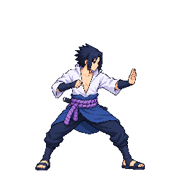

2026-10-12: user-approved artwork — heavy v11, backDash v07, charge v12, block v07, throw v07, stagger v08, specialUp v09. Other candidates on this page remain held and unapproved. Technical and contact QA is separate. Approval record.
Seven recommended candidates pass the unchanged strict head gate. Three HOLD candidates below use a diagnostic atlas only: their visible playback is not a numeric pass or art approval. The complete fighter pack remains blocked; approved fallbacks are retained.
Approve only: heavy v11, backDash v07, charge v12, throw v07, block v07, stagger v08, specialUp v09.
QA and attempt limits · Cast lineup with new charge sample
True leg chain through high kick f3/f4; measured A/B stitch.

Crouched combat build, measured uniform head fit 0.9328.
Lean combat torso/arms; four-phase loop.
Head reduced and all four poses fully inside cell.
Combat crouch instead of upright guard pop.
HOLD: unmeasured rotated head; native anatomy requires Claude manual check.
HOLD: unmeasured prone head and floor band; preserves original pose. v08 translates intact v07 figures with factor 1.
HOLD: unmeasured prone head and undersized anatomy/floor band under existing fit; original pose preserved.
Measured head-landmark stitch0.9735 and auto-head fit1.0834; strict ok on four readable frames with documented f4/f5 raised-wrist/arm probe misreads only. Overhead clasp, arch and tuck match airHeavy endpoint; see ROI/endpoint evidence.
Four right-facing recovery phases; head-only retry restores upright anatomy.